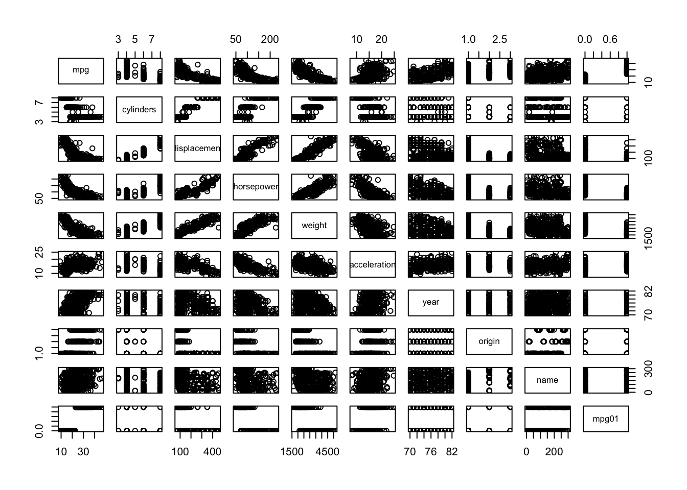
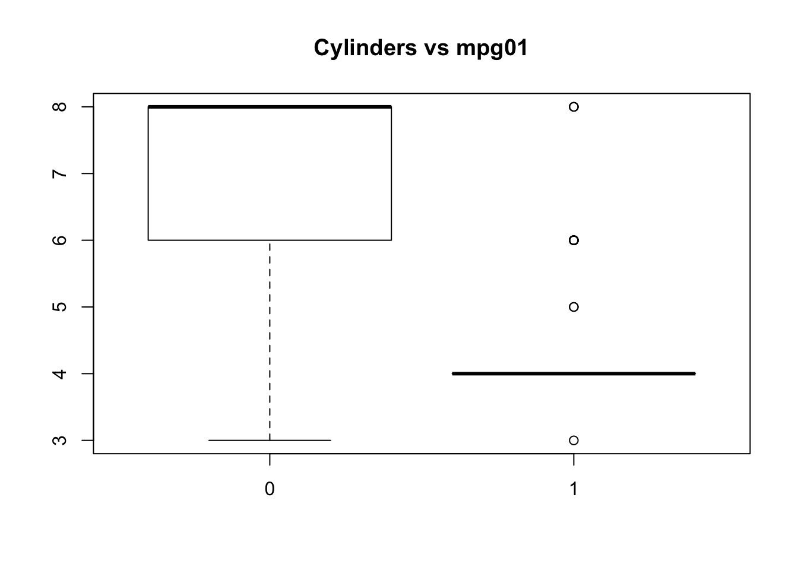
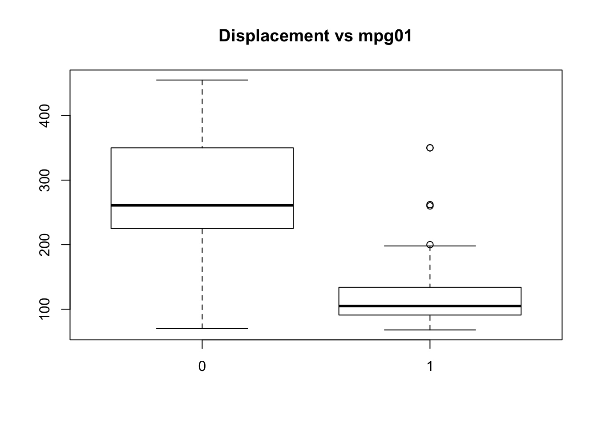
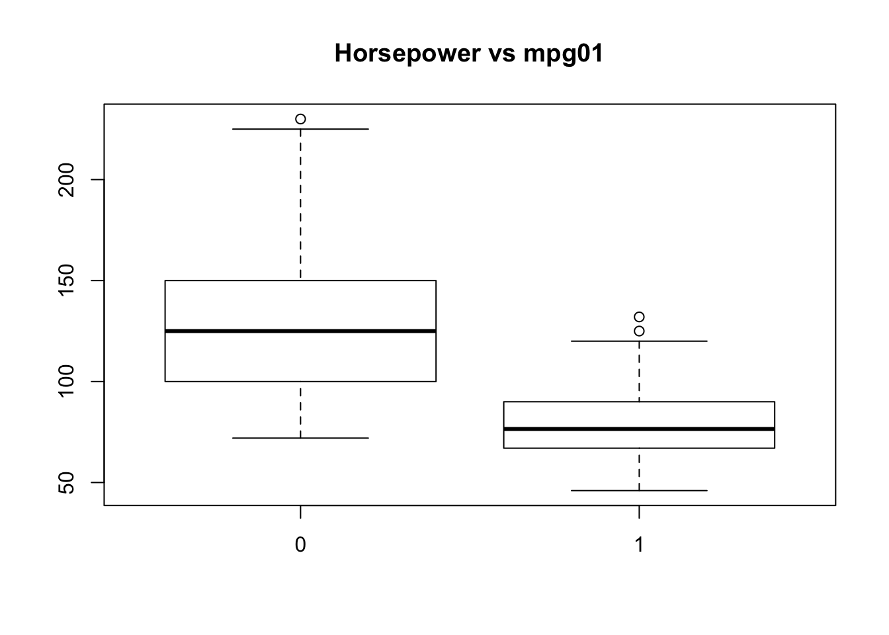
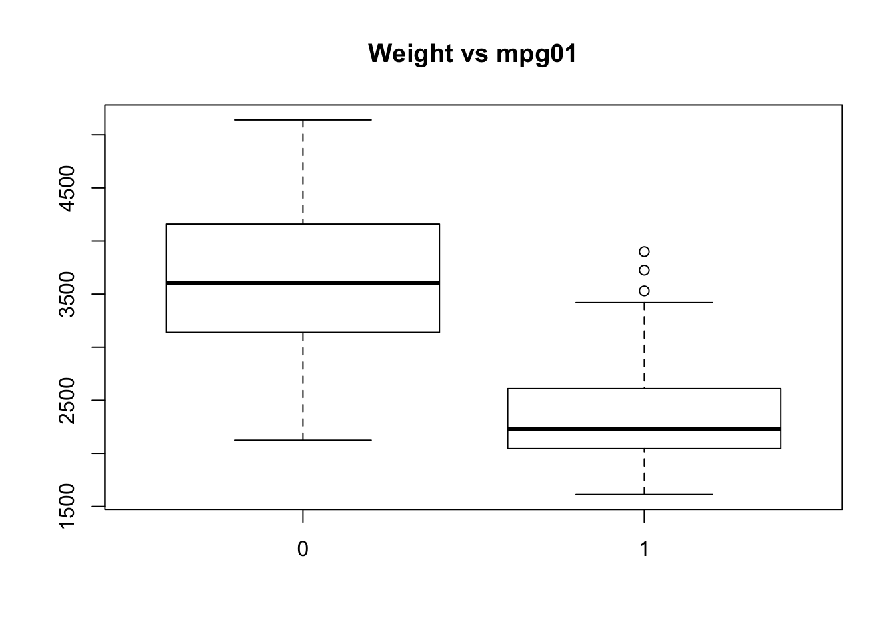
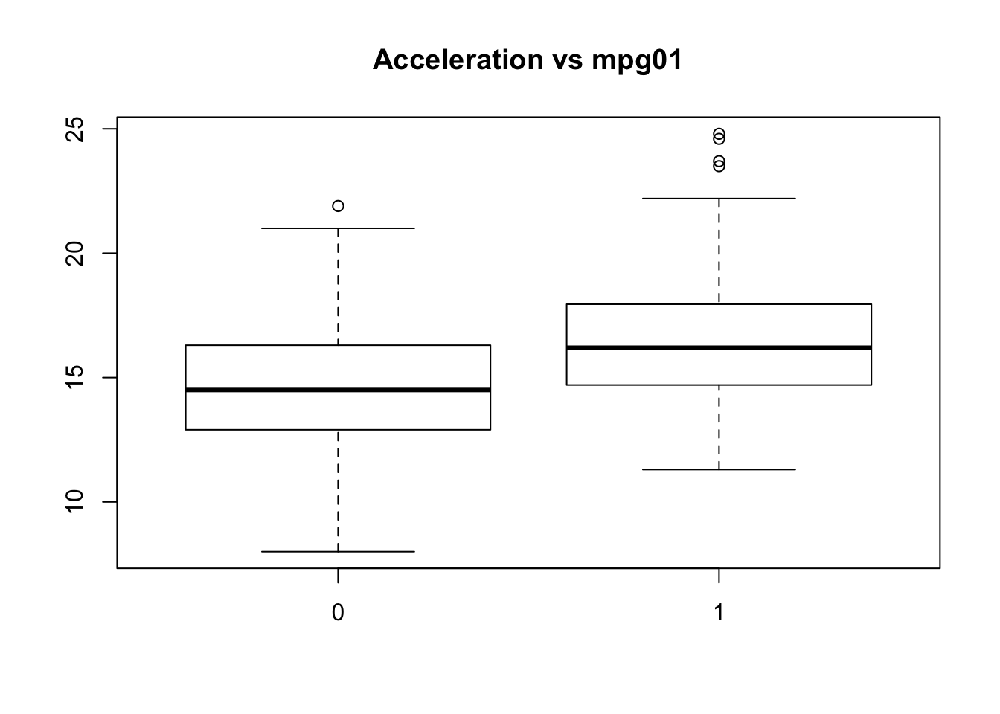
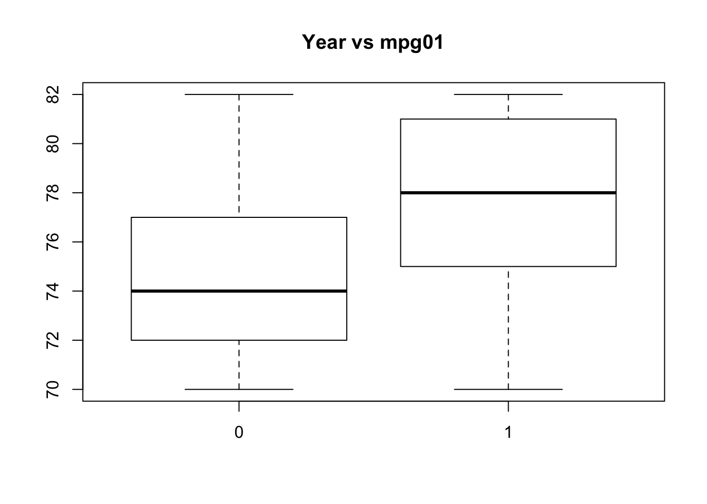

4 ’ KNN
KNN does not like formulas, it needs
p_load(class)
# X: predictors
train.X = cbind(Smarket$Lag1, Smarket$Lag2)[train ,]
test.X = cbind(Smarket$Lag1, Smarket$Lag2)[!train, ]
# Y: response
train.Direction = Smarket$Direction[train]
for(k in 1:4){
set.seed(1)
cat("working with k:", k)
# training test what is the response
knn.pred = knn(train.X, test.X, train.Direction, k = )
table(knn.pred, smarket_2005$Direction)
mean(knn.pred == smarket_2005$Direction)
}## working with k: 1working with k: 2working with k: 3working with k: 4Using LDA with MLR
p_load(mlr)
data(iris)
print(iris)## Sepal.Length Sepal.Width Petal.Length Petal.Width Species
## 1 5.1 3.5 1.4 0.2 setosa
## 2 4.9 3.0 1.4 0.2 setosa
## 3 4.7 3.2 1.3 0.2 setosa
## 4 4.6 3.1 1.5 0.2 setosa
## 5 5.0 3.6 1.4 0.2 setosa
## 6 5.4 3.9 1.7 0.4 setosa
## 7 4.6 3.4 1.4 0.3 setosa
## 8 5.0 3.4 1.5 0.2 setosa
## 9 4.4 2.9 1.4 0.2 setosa
## 10 4.9 3.1 1.5 0.1 setosa
## 11 5.4 3.7 1.5 0.2 setosa
## 12 4.8 3.4 1.6 0.2 setosa
## 13 4.8 3.0 1.4 0.1 setosa
## 14 4.3 3.0 1.1 0.1 setosa
## 15 5.8 4.0 1.2 0.2 setosa
## 16 5.7 4.4 1.5 0.4 setosa
## 17 5.4 3.9 1.3 0.4 setosa
## 18 5.1 3.5 1.4 0.3 setosa
## 19 5.7 3.8 1.7 0.3 setosa
## 20 5.1 3.8 1.5 0.3 setosa
## 21 5.4 3.4 1.7 0.2 setosa
## 22 5.1 3.7 1.5 0.4 setosa
## 23 4.6 3.6 1.0 0.2 setosa
## 24 5.1 3.3 1.7 0.5 setosa
## 25 4.8 3.4 1.9 0.2 setosa
## 26 5.0 3.0 1.6 0.2 setosa
## 27 5.0 3.4 1.6 0.4 setosa
## 28 5.2 3.5 1.5 0.2 setosa
## 29 5.2 3.4 1.4 0.2 setosa
## 30 4.7 3.2 1.6 0.2 setosa
## 31 4.8 3.1 1.6 0.2 setosa
## 32 5.4 3.4 1.5 0.4 setosa
## 33 5.2 4.1 1.5 0.1 setosa
## 34 5.5 4.2 1.4 0.2 setosa
## 35 4.9 3.1 1.5 0.2 setosa
## 36 5.0 3.2 1.2 0.2 setosa
## 37 5.5 3.5 1.3 0.2 setosa
## 38 4.9 3.6 1.4 0.1 setosa
## 39 4.4 3.0 1.3 0.2 setosa
## 40 5.1 3.4 1.5 0.2 setosa
## 41 5.0 3.5 1.3 0.3 setosa
## 42 4.5 2.3 1.3 0.3 setosa
## 43 4.4 3.2 1.3 0.2 setosa
## 44 5.0 3.5 1.6 0.6 setosa
## 45 5.1 3.8 1.9 0.4 setosa
## 46 4.8 3.0 1.4 0.3 setosa
## 47 5.1 3.8 1.6 0.2 setosa
## 48 4.6 3.2 1.4 0.2 setosa
## 49 5.3 3.7 1.5 0.2 setosa
## 50 5.0 3.3 1.4 0.2 setosa
## 51 7.0 3.2 4.7 1.4 versicolor
## 52 6.4 3.2 4.5 1.5 versicolor
## 53 6.9 3.1 4.9 1.5 versicolor
## 54 5.5 2.3 4.0 1.3 versicolor
## 55 6.5 2.8 4.6 1.5 versicolor
## 56 5.7 2.8 4.5 1.3 versicolor
## 57 6.3 3.3 4.7 1.6 versicolor
## 58 4.9 2.4 3.3 1.0 versicolor
## 59 6.6 2.9 4.6 1.3 versicolor
## 60 5.2 2.7 3.9 1.4 versicolor
## 61 5.0 2.0 3.5 1.0 versicolor
## 62 5.9 3.0 4.2 1.5 versicolor
## 63 6.0 2.2 4.0 1.0 versicolor
## 64 6.1 2.9 4.7 1.4 versicolor
## 65 5.6 2.9 3.6 1.3 versicolor
## 66 6.7 3.1 4.4 1.4 versicolor
## 67 5.6 3.0 4.5 1.5 versicolor
## 68 5.8 2.7 4.1 1.0 versicolor
## 69 6.2 2.2 4.5 1.5 versicolor
## 70 5.6 2.5 3.9 1.1 versicolor
## 71 5.9 3.2 4.8 1.8 versicolor
## 72 6.1 2.8 4.0 1.3 versicolor
## 73 6.3 2.5 4.9 1.5 versicolor
## 74 6.1 2.8 4.7 1.2 versicolor
## 75 6.4 2.9 4.3 1.3 versicolor
## 76 6.6 3.0 4.4 1.4 versicolor
## 77 6.8 2.8 4.8 1.4 versicolor
## 78 6.7 3.0 5.0 1.7 versicolor
## 79 6.0 2.9 4.5 1.5 versicolor
## 80 5.7 2.6 3.5 1.0 versicolor
## 81 5.5 2.4 3.8 1.1 versicolor
## 82 5.5 2.4 3.7 1.0 versicolor
## 83 5.8 2.7 3.9 1.2 versicolor
## 84 6.0 2.7 5.1 1.6 versicolor
## 85 5.4 3.0 4.5 1.5 versicolor
## 86 6.0 3.4 4.5 1.6 versicolor
## 87 6.7 3.1 4.7 1.5 versicolor
## 88 6.3 2.3 4.4 1.3 versicolor
## 89 5.6 3.0 4.1 1.3 versicolor
## 90 5.5 2.5 4.0 1.3 versicolor
## 91 5.5 2.6 4.4 1.2 versicolor
## 92 6.1 3.0 4.6 1.4 versicolor
## 93 5.8 2.6 4.0 1.2 versicolor
## 94 5.0 2.3 3.3 1.0 versicolor
## 95 5.6 2.7 4.2 1.3 versicolor
## 96 5.7 3.0 4.2 1.2 versicolor
## 97 5.7 2.9 4.2 1.3 versicolor
## 98 6.2 2.9 4.3 1.3 versicolor
## 99 5.1 2.5 3.0 1.1 versicolor
## 100 5.7 2.8 4.1 1.3 versicolor
## 101 6.3 3.3 6.0 2.5 virginica
## 102 5.8 2.7 5.1 1.9 virginica
## 103 7.1 3.0 5.9 2.1 virginica
## 104 6.3 2.9 5.6 1.8 virginica
## 105 6.5 3.0 5.8 2.2 virginica
## 106 7.6 3.0 6.6 2.1 virginica
## 107 4.9 2.5 4.5 1.7 virginica
## 108 7.3 2.9 6.3 1.8 virginica
## 109 6.7 2.5 5.8 1.8 virginica
## 110 7.2 3.6 6.1 2.5 virginica
## 111 6.5 3.2 5.1 2.0 virginica
## 112 6.4 2.7 5.3 1.9 virginica
## 113 6.8 3.0 5.5 2.1 virginica
## 114 5.7 2.5 5.0 2.0 virginica
## 115 5.8 2.8 5.1 2.4 virginica
## 116 6.4 3.2 5.3 2.3 virginica
## 117 6.5 3.0 5.5 1.8 virginica
## 118 7.7 3.8 6.7 2.2 virginica
## 119 7.7 2.6 6.9 2.3 virginica
## 120 6.0 2.2 5.0 1.5 virginica
## 121 6.9 3.2 5.7 2.3 virginica
## 122 5.6 2.8 4.9 2.0 virginica
## 123 7.7 2.8 6.7 2.0 virginica
## 124 6.3 2.7 4.9 1.8 virginica
## 125 6.7 3.3 5.7 2.1 virginica
## 126 7.2 3.2 6.0 1.8 virginica
## 127 6.2 2.8 4.8 1.8 virginica
## 128 6.1 3.0 4.9 1.8 virginica
## 129 6.4 2.8 5.6 2.1 virginica
## 130 7.2 3.0 5.8 1.6 virginica
## 131 7.4 2.8 6.1 1.9 virginica
## 132 7.9 3.8 6.4 2.0 virginica
## 133 6.4 2.8 5.6 2.2 virginica
## 134 6.3 2.8 5.1 1.5 virginica
## 135 6.1 2.6 5.6 1.4 virginica
## 136 7.7 3.0 6.1 2.3 virginica
## 137 6.3 3.4 5.6 2.4 virginica
## 138 6.4 3.1 5.5 1.8 virginica
## 139 6.0 3.0 4.8 1.8 virginica
## 140 6.9 3.1 5.4 2.1 virginica
## 141 6.7 3.1 5.6 2.4 virginica
## 142 6.9 3.1 5.1 2.3 virginica
## 143 5.8 2.7 5.1 1.9 virginica
## 144 6.8 3.2 5.9 2.3 virginica
## 145 6.7 3.3 5.7 2.5 virginica
## 146 6.7 3.0 5.2 2.3 virginica
## 147 6.3 2.5 5.0 1.9 virginica
## 148 6.5 3.0 5.2 2.0 virginica
## 149 6.2 3.4 5.4 2.3 virginica
## 150 5.9 3.0 5.1 1.8 virginica## Define the task
task = makeClassifTask(id = "tutorial", data = iris, target = "Species")
## Define the learner
lrn = makeLearner("classif.lda")
## Define the resampling strategy
rdesc = makeResampleDesc(method = "CV", stratify = TRUE)
## Do the resampling
r = resample(learner = lrn, task = task, resampling = rdesc, show.info = FALSE)
## Get the mean misclassification error
print(r)## Resample Result
## Task: tutorial
## Learner: classif.lda
## mmce.aggr: 0.03
## mmce.mean: 0.03
## mmce.sd: 0.06
## Runtime: 0.134475library(MASS)
fit.lda <- lda(direction ~ lag2,
data = weekly,
subset = train)
fit.lda
pred.lda <- predict(fit.lda, weekly.20092010)
table(pred.lda$class, direction.20092010)4.1 Q 11.
attach(Auto)## The following objects are masked from Auto (pos = 12):
##
## acceleration, cylinders, displacement, horsepower, mpg, name,
## origin, weight, year## The following object is masked from package:ggplot2:
##
## mpgmpg01 <- rep(0, length(mpg))
mpg01[mpg > median(mpg)] <- 1
Auto <- data.frame(Auto, mpg01)cor(Auto[, -9])## mpg cylinders displacement horsepower weight
## mpg 1.0000000 -0.7776175 -0.8051269 -0.7784268 -0.8322442
## cylinders -0.7776175 1.0000000 0.9508233 0.8429834 0.8975273
## displacement -0.8051269 0.9508233 1.0000000 0.8972570 0.9329944
## horsepower -0.7784268 0.8429834 0.8972570 1.0000000 0.8645377
## weight -0.8322442 0.8975273 0.9329944 0.8645377 1.0000000
## acceleration 0.4233285 -0.5046834 -0.5438005 -0.6891955 -0.4168392
## year 0.5805410 -0.3456474 -0.3698552 -0.4163615 -0.3091199
## origin 0.5652088 -0.5689316 -0.6145351 -0.4551715 -0.5850054
## mpg01 0.8369392 -0.7591939 -0.7534766 -0.6670526 -0.7577566
## acceleration year origin mpg01
## mpg 0.4233285 0.5805410 0.5652088 0.8369392
## cylinders -0.5046834 -0.3456474 -0.5689316 -0.7591939
## displacement -0.5438005 -0.3698552 -0.6145351 -0.7534766
## horsepower -0.6891955 -0.4163615 -0.4551715 -0.6670526
## weight -0.4168392 -0.3091199 -0.5850054 -0.7577566
## acceleration 1.0000000 0.2903161 0.2127458 0.3468215
## year 0.2903161 1.0000000 0.1815277 0.4299042
## origin 0.2127458 0.1815277 1.0000000 0.5136984
## mpg01 0.3468215 0.4299042 0.5136984 1.0000000pairs(Auto)
boxplot(cylinders ~ mpg01, data = Auto, main = "Cylinders vs mpg01")
boxplot(displacement ~ mpg01, data = Auto, main = "Displacement vs mpg01")
boxplot(horsepower ~ mpg01, data = Auto, main = "Horsepower vs mpg01")
boxplot(weight ~ mpg01, data = Auto, main = "Weight vs mpg01")
boxplot(acceleration ~ mpg01, data = Auto, main = "Acceleration vs mpg01")
boxplot(year ~ mpg01, data = Auto, main = "Year vs mpg01")
c We may conclude that there exists some association between “mpg01” and “cylinders”, “weight”, “displacement” and “horsepower”. Split the data into a training set and a test set.
train = (year%%2 == 0) # if the year is even
test = !train
Auto.train = Auto[train, ]
Auto.test = Auto[test, ]
mpg01.test = mpg01[test]- Perform LDA on the training data in order to predict “mpg01” using the variables that seemed most associated with “mpg01” in (b). What is the test error of the model obtained ?
p_load(MASS)
# LDA
library(MASS)
lda.fit = lda(mpg01 ~ cylinders + weight + displacement + horsepower,
data = Auto,
subset = train)
lda.pred = predict(lda.fit, Auto.test)
mean(lda.pred$class != mpg01.test)## [1] 0.1263736# QDA
qda.fit = qda(mpg01 ~ cylinders + weight + displacement + horsepower, data = Auto,
subset = train)
qda.pred = predict(qda.fit, Auto.test)
mean(qda.pred$class != mpg01.test)## [1] 0.1318681- logistic
# Logistic regression
glm.fit = glm(mpg01 ~ cylinders + weight + displacement + horsepower, data = Auto,
family = binomial, subset = train)
glm.probs = predict(glm.fit, Auto.test, type = "response")
glm.pred = rep(0, length(glm.probs))
glm.pred[glm.probs > 0.5] = 1
mean(glm.pred != mpg01.test)## [1] 0.1208791- KNN
library(class)
train.X = cbind(cylinders, weight, displacement, horsepower)[train, ]
test.X = cbind(cylinders, weight, displacement, horsepower)[test, ]
train.mpg01 = mpg01[train]
set.seed(1)
# KNN(k=1)
knn.pred = knn(train.X, test.X, train.mpg01, k = 1)
mean(knn.pred != mpg01.test)## [1] 0.1538462# KNN(k=10)
knn.pred = knn(train.X, test.X, train.mpg01, k = 10)
mean(knn.pred != mpg01.test)## [1] 0.1648352# KNN(k=100)
knn.pred = knn(train.X, test.X, train.mpg01, k = 100)
mean(knn.pred != mpg01.test)## [1] 0.1428571